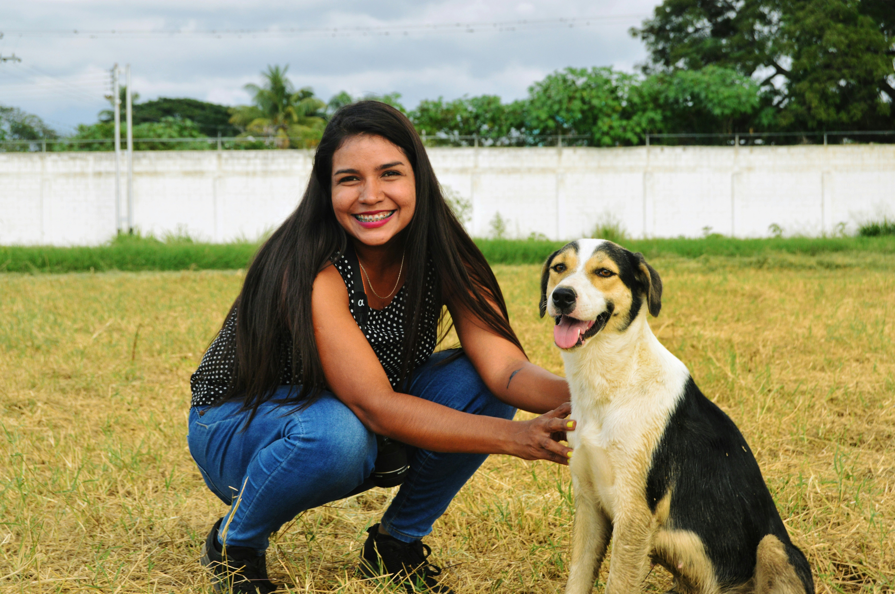

Projetos
Faça uma doação!
Voluntariado
Nosso trabalho é movido por um amor incondicional aos cães, mas é sustentado pela dedicação e pelo coração dos nossos voluntários. Cada resgate, cada recuperação e cada adoção feliz só são possíveis graças à generosidade de pessoas como você. Ser voluntário na nossa ONG é mais do que dedicar tempo; é uma oportunidade de colocar seu amor em ação e transformar a vida de cães que sofreram com o abandono e os maus-tratos.
Como Você Pode Ajudar
O voluntariado vai muito além de cuidar diretamente dos cães em nosso abrigo. Suas habilidades e seu tempo são valiosos em diversas áreas:
- Cuidado Direto e Operacional
- Ajuda Remota e Estratégica
O Que Esperamos de Você
O único requisito obrigatório é ter paixão pela causa animal e comprometimento. O trabalho em uma ONG exige responsabilidade, pontualidade e, em muitos momentos, força emocional. Mas a recompensa — o olhar de um cão resgatado e a alegria de vê-lo encontrar um lar — é imensurável.
Para se candidatar ao voluntariado, preencha nosso formulário ou entre em contato.